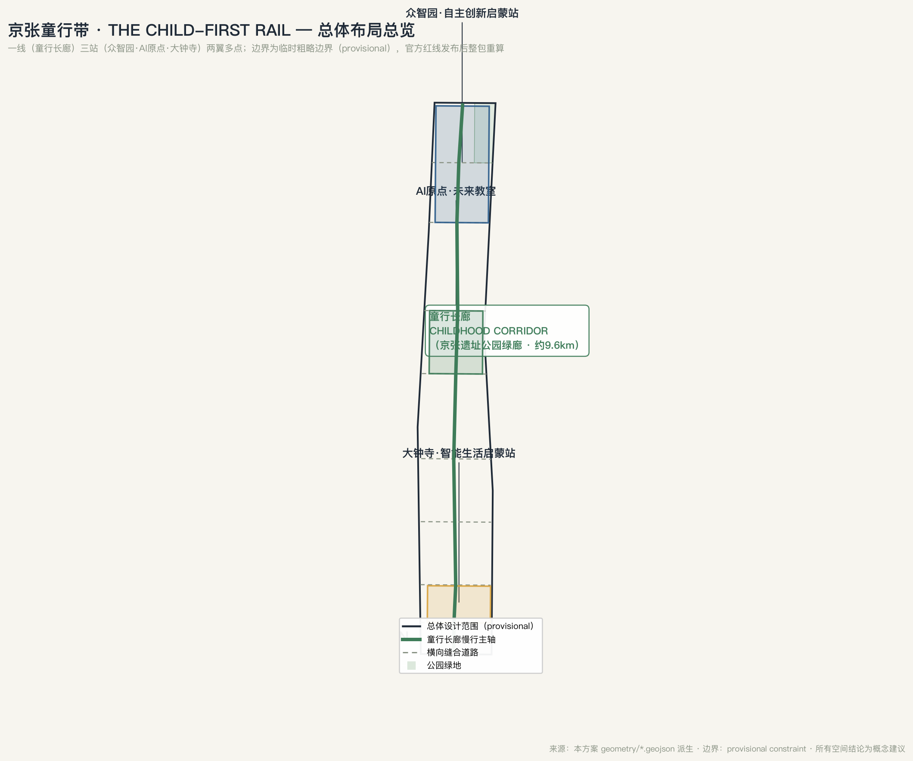
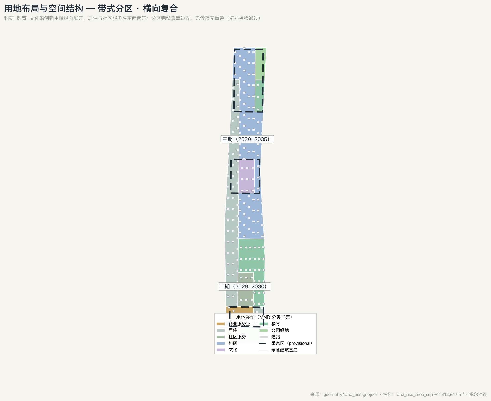
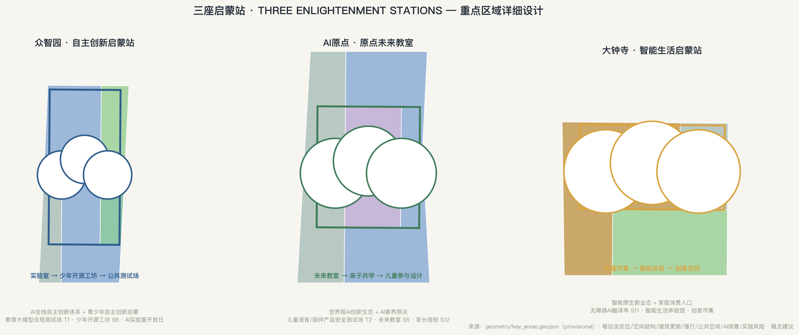
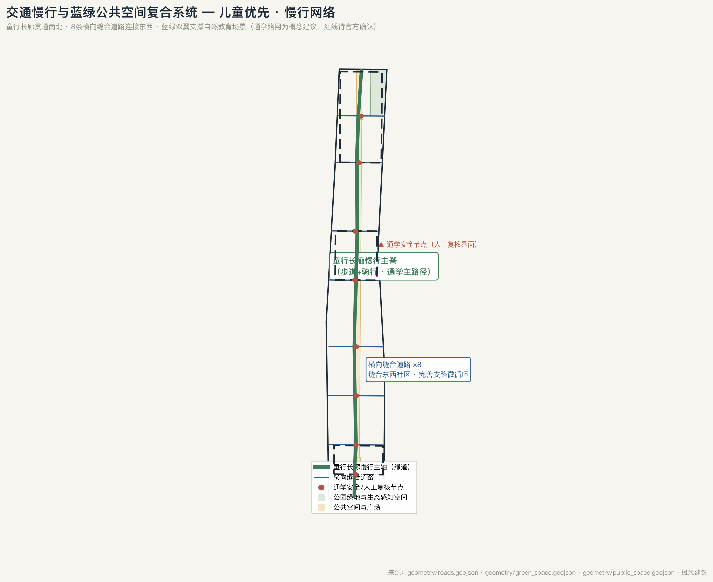
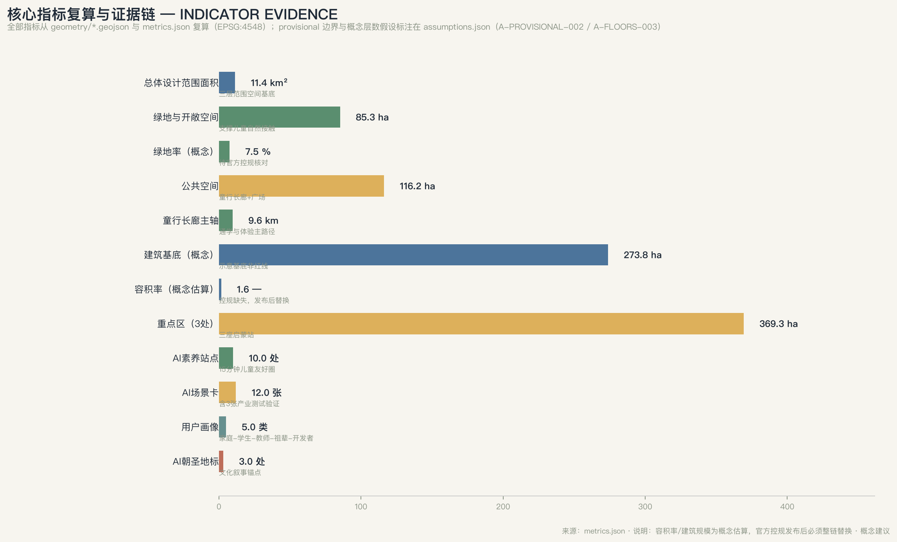

Jing-Zhang Child-First Rail: A Child-Friendly × AI-Literacy Urban Design for the Centennial Jing-Zhang AI Innovation Belt
Taking 'child-friendliness as the first design principle of an AI city' as the overarching concept, this proposal turns the centennial Jing-Zhang railway from Zhan Tianyou's teenage starting point into the AI-era starting point for every child today: one corridor (Childhood Corridor), three stations (Zhongzhiyuan Autonomy Enlightenment Station, AI Origin Future Classroom, Dazhongsi Smart Life Enlightenment Station), two wings (EdTech Services Wing, Nature Education Wing), and a multi-node community AI-literacy network, delivering all agent.1-6 tasks through 12 scenario cards, 5 user personas, 3 AI pilgrimage landmarks, and an annual events system.
<!-- This proposal is a conceptual suggestion generated by an AI agent. It does not replace formal planning and does not constitute an official government determination. All spatial proposals are conceptual suggestions, reference schemes, or material for professional teams to deepen. -->
Jing-Zhang Child-First Rail: A Child-Friendly × AI-Literacy Urban Design for the Centennial Jing-Zhang AI Innovation Belt
Design Basis and Source Inventory
This proposal takes the Prequalification Announcement for the International Urban Design Call for the Centennial Jing-Zhang AI Innovation Belt, issued by the Haidian Branch of the Beijing Municipal Commission of Planning and Natural Resources, as its primary basis 来源. It fully reads the design brief, allowed design space, source inventory, enums, planning limits, and schemas in brief/site-package/ 来源. The agent-facing open call taskbook (agent.1–agent.6) is the direct basis for task coverage 来源, and its boundary clause—"all outcomes are open co-creation suggestions that do not replace formal planning or constitute government determinations"—applies throughout. Source usability follows the registry in data/source_registry.json 来源: only official announcements, official policies, and public data support formal statements; the repository's provisional boundary is explicitly labeled provisional and no background or provisional material is promoted into statutory control claims.
Overall design judgment: The Centennial Jing-Zhang AI Innovation Belt should be more than industrial space—it should be the urban interface of the "next generation." The starting point of the Jing-Zhang railway was a 12-year-old: Zhan Tianyou studied abroad as a "Chinese Educational Mission" boy and later led the construction of China's first self-built trunk railway. Today this belt carries the mission of a global AI industry hub and AI pilgrimage site, and AI-era "self-reliant innovation" also begins with childhood enlightenment. This proposal therefore takes child-friendliness as the first design principle of an AI city: "How does a child grow up safely, learn with curiosity, create autonomously, and participate in AI with dignity here?" becomes the test for every spatial decision. Child-friendliness is not decorative; it is testable through spatial and governance metrics: continuous school-commute routes, accessible play and nature contact, AI-literacy station density, child-participation mechanisms, and digital privacy protection.
All spatial layers use the repository's provisional rough boundary 来源 空间数据. This boundary is derived from the announcement's textual extent and the ~11.4 km² area constraint; it is used only for generation, visualization, and self-check, and must not serve as an official redline, precise area, or statutory control basis. When official boundaries are published, all layers and metrics must be recalculated as a whole 深度. The three key areas likewise use provisional boundaries 来源 空间数据, so key-area conclusions are directional designs only.

Three-Level Scope Framework
The three scope levels follow the working depths defined in the announcement 深度:
| Level | Extent | Working goal in this proposal | Spatial anchor |
|---|---|---|---|
| Coordinated research area | 43.6 km² | AI innovation ecosystem, future city form, and "child-friendly × AI-literacy" belt strategy | Naming system, logo, innovation chain, two-wing loop |
| Overall design area | 11.4 km² | Urban renewal at regulatory-plan urban design depth; deliver the Childhood Corridor and renewal projects | Land-use layers such as 空间数据 |
| Key detailed-design area | 368.4 ha | Three key areas designed in detail as "three enlightenment stations" | 空间数据 |
The three levels are not separate drawings but a strategy–structure–node cascade 深度. The research level decides industrial and city-form judgments; the overall level delivers the "one corridor, three stations, two wings, multiple nodes" spatial structure, land-use zoning, and renewal projects; the key-area level verifies building renewal, public space, mobility, and AI scenarios at station scale 深度. All areas and ratios are recomputable from geometry/*.geojson and metrics.json; the narrative explains design meaning only 深度.

Coordinated Research Area: Industry and Future-City Research
Overall Concept, Naming System, and Logo Direction
The overall concept is "Jing-Zhang Child-First Rail" (京张童行带), with the following naming system 来源 深度:
| Level | Name | Meaning |
|---|---|---|
| Belt | 京张童行带 / The Child-First Rail | "Child-first" states that child-friendliness is the first design principle of this AI city |
| Spine | Childhood Corridor (童行长廊) | The child commute, play, and nature-learning spine along the Jing-Zhang heritage park greenway |
| Three stations | Autonomy Enlightenment Station (Zhongzhiyuan) · Origin Future Classroom (AI Origin) · Smart Life Enlightenment Station (Dazhongsi) | Mapping to full-stack self-reliant innovation, world-class innovation ecosystem, and AI-native new business |
| Two wings | EdTech Services Wing · Nature Education Wing | Mapping to the Zhongguancun technology-services wing and the Xiaoyuehe scenario wing |
The logo direction uses the "herringbone" (人) fold-back alignment of the Jing-Zhang railway as its prototype, transforming it into a "track + star + running child" mark: the two rails represent history and future, and the star at the junction represents every child's AI starting station. The color system is translated from railway signal language—safe green (commute and public space), exploration yellow (innovation and testing), and help red (child help and human-review nodes)—forming an extendable visual system from railway heritage to the public interface of an AI city. This logo is a directional concept; final trademarks and fonts require rights clearance and professional deepening 标准.
Three Positionings and Five Functions
The three positionings map as: Centennial Jing-Zhang culture belt → Youth-China enlightenment culture belt (narrative in the agent.5 section); urban AI life experience belt → child-friendly, all-age life experience belt (using child-friendliness to test all-age accessibility); AI integration innovation belt → AI-literacy, intergenerational learning innovation belt (treating AI literacy as a public good of the belt) 来源.
The five functions each land: the full-stack self-reliant innovation system is carried by Zhongzhiyuan, with a front-loaded "self-reliant innovation begins in childhood" youth open-source workshop; the world-class AI innovation ecosystem is built by the AI Origin community together with the university ring, layered with a "talent nursery" mechanism; the AI+ scenario empowerment paradigm uses the Xiaoyuehe scenario wing as an open test field where "scenario is the classroom"; the intelligent AI vitality city uses the child-friendly vitality network as its yardstick; and global discourse on AI governance enters through the "children's digital rights and AI governance" agenda, forming differentiated international discourse 来源 标准.
Three-Areas-Two-Wings Loop and Global Cases
The three areas and two wings form an "enlightenment–acceleration–application" loop: the AI Origin community handles AI-literacy enlightenment and outcome translation, Zhongzhiyuan handles full-stack self-reliant innovation and test acceleration, and Dazhongsi handles smart-life applications and market feedback; the EdTech Services Wing provides talent, capital, and Zhongguancun IP, while the Nature Education Wing provides real scenarios and public experience, with both wings feeding demand back to the three areas 来源.
Reference cases for global AI innovation ecosystems (5–8, all from public sources, borrowed as mechanisms rather than copied wholesale):
| Case | Transferable mechanism | Source |
|---|---|---|
| Helsinki: child-friendly + digital literacy city | Child participatory budgeting, city-level digital literacy curricula, AI ethics in classrooms | Public policy and city reports |
| Singapore AI literacy education framework | Tiered national AI literacy curricula (children–adults) | Public policy documents |
| Barcelona superblocks | Rebalancing street rights around street safety and children's independent mobility | Public research |
| London STEM/maker education network | Embedded maker education in libraries and community spaces | Public project material |
| Pittsburgh robotics industry–education symbiosis | University–industry–community education loop | Public coverage |
| Shenzhen/Hangzhou AI education open platforms | EdTech companies and open public education scenarios | Public coverage |
The common thread is "open the public scenario first, let education pay later": learners enter real scenarios first, then curricula, certification, and industry demand connect. This proposal accordingly designs scenario cards in a "experience–learn–operate" three-layer structure 深度.
Overall Design Area: Urban Renewal at Regulatory-Plan Urban Design Depth
Spatial Structure: One Corridor, Three Stations, Two Wings, Multiple Nodes
The overall spatial structure is "one corridor, three stations, two wings, multiple nodes" 深度 空间数据:
- One corridor (Childhood Corridor): the child-friendly spine along the Jing-Zhang heritage park greenway, ~9.6 km (conceptual design value) 指标, combining commute, play, nature learning, and AI-literacy nodes, integrated with the existing park trail and cycling system.
- Three stations (three enlightenment stations): corresponding to the three key areas (see the key-area chapter).
- Two wings: the west EdTech Services Wing (toward Zhongguancun, anchored by universities and tech services) and the east Nature Education Wing (anchored by the Xiaoyuehe and Qinghe blue-green spaces).
- Multiple nodes: 10 community AI-literacy stations 指标 and 12 scenario nodes 指标, forming a 15-minute child-friendly life circle.
Land Use and Renewal Framework
Land use is zoned longitudinally along the belt with lateral compounding 深度: the south (Dazhongsi) is commerce and residence, the middle (AI Origin) is research, culture, and education, and the north (Zhongzhiyuan) is research and education; the central band retains the innovation spine while the west and east bands hold residence, community services, and education 空间数据. The zoning completely covers the submitted boundary without gaps or overlaps 指标.
Urban renewal follows "preserve heritage, stitch the two sides, restrain new growth" 深度: the Jing-Zhang heritage park and railway remains are preserved and activated as a whole; the east and west communities are reconnected through stitched roads and public space without large-scale demolition (see the renewal project list chapter); new buildings focus on research, education, and community services. Development intensity is a conceptual estimate (FAR ≈ 1.57) 指标; official regulatory-plan conditions (FAR, height, green ratio, setbacks) are missing and must replace this estimate once published 标准 深度.
Mobility, Rail, and Municipal Strategy
The mobility strategy centers on a "child-first slow-mobility network" 深度 空间数据:
- The Childhood Corridor is the north–south slow-mobility spine (walk + cycle), connecting the three key areas and rail stations;
- Eight transverse stitched roads reconnect the east and west communities and complete the local micro-network, reducing detours 空间数据;
- School-commute network: continuous commute routes anchored on schools, communities, and the corridor, prioritizing walking and cycling space with speed limits and car-free periods (conceptual suggestion);
- Rail station integration: strengthen interchange between Line 13 stations and the corridor, reserving spatial interfaces for future rail connections (no engineering conclusions);
- Parking and non-motorized organization: shared bikes and child-vehicle parking near key areas, slow-mobility first.
Municipal and new-infrastructure strategy 深度: distributed energy, edge computing, and smart lighting are combined with renewal projects (conceptual suggestions), and AI scenario nodes carry local data-processing and privacy-protection facilities (local processing, human-review interfaces). Energy loads and municipal capacity require professional calculation; this proposal gives no engineering conclusions.
Key-Area Detailed Design
The three key areas are designed as "three enlightenment stations," each delivering seven elements: positioning + spatial structure + building renewal + mobility + public space + AI scenarios + implementation risks 深度 标准.

Zhongzhiyuan AI Acceleration Area: Autonomy Enlightenment Station
- Positioning: the main carrier of the full-stack self-reliant innovation system, layered with "youth self-reliant innovation enlightenment" so the next generation participates in the real full-stack innovation chain 来源.
- Spatial structure: "laboratories–open-source workshops–test field" 空间数据: R&D labs in the north, youth open-source workshops and exhibition in the middle, public test and validation in the south.
- Building renewal: research and education buildings (schematic footprints, e.g. 空间数据); existing industrial space encouraged to renew into shared labs and open-source workshops; no parcel-level conclusions.
- Mobility: the northern corridor section passes through, with a low-speed test demonstration segment (conceptual, reversible).
- Public space: the Zhongzhiyuan Youth Plaza 空间数据 hosts youth open-source competitions and exhibitions.
- AI scenarios: youth open-source workshop (hardware + models), EdTech LLM compliance test field (industrial test scenario T1, see scenarios chapter), AI lab open days.
- Risks: fragmented ownership of industrial space requires property-owner coordination; test scenarios require safety and compliance review.
Beijing AI Origin Community: Origin Future Classroom
- Positioning: the meeting point of the world-class AI innovation ecosystem and AI-literacy enlightenment, making the "AI origin" simultaneously "the origin of every child's AI literacy" 来源.
- Spatial structure: "future classroom–parent-child co-learning–child participatory design" 空间数据: a community AI-literacy center at the core, parent-child co-learning and participatory-design workshops around it.
- Building renewal: research and cultural/education buildings, with community buildings encouraged toward mixed use.
- Mobility: the middle corridor section passes through, connecting to Line 13 stations by slow mobility.
- Public space: the AI Origin Future Plaza 空间数据 hosts public courses and child participatory planning.
- AI scenarios: future classroom (tiered AI-literacy curricula), child voice/companion product safety test field (industrial test scenario T2, privacy sandbox), parent-child AI co-creation workshops, and an AI-literacy evening school for parents.
- Risks: limited community space requires sharing with existing schools and community centers; privacy and age-appropriateness review is a precondition of operation.
Dazhongsi AI Industry Cluster: Smart Life Enlightenment Station
- Positioning: the entry point for AI-native new business and family consumption experience, bringing AI life products into households as "experienceable, learnable, purchasable" 来源.
- Spatial structure: "child-interest market–smart experience–maker space" 空间数据: a smart-life experience block at the core with family services and a maker market.
- Building renewal: commercial/service buildings, with existing commercial space renewed into smart-experience formats.
- Mobility: the southern corridor section passes through, with transverse roads connecting to the Sidaokou and Dazhongsi communities.
- Public space: the Dazhongsi Child-Interest Plaza 空间数据 hosts markets and family activities.
- AI scenarios: AI consumer-product experience hall, family smart-life laboratory, weekend maker market, and an accessible AI translation booth (serving deaf children).
- Risks: commercial renewal requires market-feasibility study; experience formats must avoid over-entertainment and child-privacy risks.
AI Innovation Ecosystem, Talent Profiles, and AI+ Scenarios
AI Innovation Ecosystem and Talent Profiles
The AI innovation ecosystem follows "open public scenarios–education pays later–full-chain self-reliance" 来源 标准: Zhongzhiyuan supplies full-stack capability, the AI Origin community supplies literacy and talent nursery, Dazhongsi supplies applications and market feedback, and the two wings supply services and scenarios. Five user personas 指标:
| Persona | Needs | Space and scenarios |
|---|---|---|
| Preschool children and parents | Safe play, nature contact, parent-child co-learning | Corridor play-chain, nature classroom, parent-child AI co-creation |
| Primary/secondary students and parents | Commute safety, AI-literacy courses, extracurricular creation | Commute routes, future classroom, youth open-source workshop |
| Young teachers and EdTech founders | Curriculum experiments, product testing, real scenarios | EdTech Services Wing, test fields T1/T2 |
| Grandparent caregivers | Intergenerational digital literacy, companionship support | Evening school, community AI-literacy stations |
| EdTech developers and researchers | Data, compute, compliance testing, open-source collaboration | Zhongzhiyuan test field, open educational datasets |
AI Scenario Cards (12)
Twelve scenario cards cover learning, mobility, nature, health, culture, accessibility, and industrial testing 来源 指标; S1–S3 are AI industrial test/validation scenarios:
| No. | Scenario | Location | Users | Privacy boundary and human review | Layer/metric |
|---|---|---|---|---|---|
| S1 | EdTech LLM compliance test field (test T1) | Zhongzhiyuan | EdTech companies | Anonymized data, human review loop | 空间数据 |
| S2 | Child voice/companion product safety test field (test T2) | AI Origin | Product developers | Privacy sandbox, guardian consent | 空间数据 |
| S3 | School-commute low-speed shuttle test segment (test T3) | Southern corridor | Students and parents | Low speed, confined, reversible, human takeover | 空间数据 |
| S4 | Corridor commute AI safety alert | All commute routes | Students | Alert only, no individual profiling | 指标 |
| S5 | Future classroom tiered AI-literacy curricula | AI Origin | Children and parents | Local processing, human-reviewed curricula | 空间数据 |
| S6 | Youth open-source workshop (hardware + models) | Zhongzhiyuan | Youth developers | Open-source license, mentor review | 空间数据 |
| S7 | AI birdwatching / nature perception station | Xiaoyuehe wing | Families | Public data, no individual identification | 空间数据 |
| S8 | AI museum: Jing-Zhang railway history guide | Corridor culture node | All visitors | Content review, no forced collection | 空间数据 |
| S9 | Smart sports: AI fitness coach | Corridor sports ground | Children and youth | Local data storage, guardian deletable | 空间数据 |
| S10 | AI tree-hole: child mental-health support | Community AI-literacy stations | Youth | Anonymous, professional human intervention | 指标 |
| S11 | Accessible AI translation booth | Dazhongsi | Deaf children | Immediate erasure, no retention | 空间数据 |
| S12 | AI-literacy evening school for parents | Community stations and online | Grandparents and parents | Human-led, AI-assisted | 指标 |
All scenarios share common boundaries 来源: no individual-privacy collection, no automated decisions without human review, no around-the-clock indiscriminate surveillance, and no presentation of test scenarios as approved operations 深度. Each scenario card has a spatial node expression in visual/index.html.
Land Use, Building Scale, and Retain/Renovate/Demolish/New Logic
Land use is organized as "belt zoning plus lateral compounding" 深度 空间数据, fully covering the submitted boundary 指标. Main land-use types include research (0802), education (0804), culture (0803), commercial services (05), residence (0701/0702), and park green space (1401) 标准. Green and open space is about 85.3 ha 指标, with a green ratio of about 7.5% (conceptual) 指标; public space is about 116.2 ha 指标, including the corridor spine and key-area plazas 空间数据.
Building scale is a conceptual estimate 深度: building footprint about 2.738 million m² 指标, total floor area about 17.94 million m² 指标, FAR about 1.57 指标, and building density about 24% 指标. These are estimates based on conceptual floor-count assumptions for spatial-form discussion only; official regulatory-plan conditions (FAR, height, green ratio, setbacks) are missing 来源 and must replace this chain once published 标准 深度.
The retain/renovate/demolish/new logic follows "preserve, stitch, add, restrain" 深度: preserve—the heritage park, railway remains, and historic stations are retained and activated as a whole; stitch—eight transverse stitched roads and public spaces repair east–west community connections 空间数据; add—new research, education, and community-service buildings concentrate around key areas and stations; restrain—large-scale demolition is strictly limited. Parcel-level retain/renovate/demolish conclusions require existing-building and ownership data and are not given here 深度.
Mobility, Rail, Municipal, and Public-Service Facilities
The mobility strategy is built on the child-first slow-mobility network (see the overall design chapter) 深度:

the corridor runs north–south 空间数据 指标, eight transverse stitched roads complete the micro-network 空间数据, and rail stations (Line 13) connect by slow mobility. Public services are organized at two levels along the corridor and community stations: belt-level facilities are the future classroom, youth open-source workshop, and smart-life experience hall; community-level facilities are 10 AI-literacy stations 指标 carrying commute support, evening school, and tree-hole services. New infrastructure features "local data and privacy-protection facilities at AI scenario nodes" 深度; distributed energy, edge computing, and smart lighting are conceptual suggestions whose capacity and feasibility require professional calculation.
Blue-Green Space, Public Space, and Urban Character
Blue-Green Space
The blue-green system is organized as "one spine, two wings" 深度: the spine is the Childhood Corridor (heritage park greenway) 空间数据, and the two wings are the Xiaoyuehe nature-education wing and the Qinghe blue-green space 空间数据. Park green space and nature-perception nodes combine: AI birdwatching stations, plant-phenology classrooms, and rain gardens (conceptual), letting children meet AI sensing technology in real nature while protecting ecologically sensitive areas first.
AI Public Space and Pilgrimage Landmarks
AI public space follows "touchable, explainable, reversible" 来源 深度: every AI scenario node carries a "human-review interface" and a "data explanation sign" so children and the public can understand what the AI is doing, where the data goes, and how to ask for help. Three AI pilgrimage landmarks 指标:
1. Starting Station · Youth Science Enlightenment Museum (historic segment of the corridor): the narrative starting point of Zhan Tianyou and the Chinese Educational Mission, with railway-heritage exhibits and children's science-enlightenment space—the physical expression of "the starting point of the centennial Jing-Zhang was a boy"; 2. Origin Future Classroom (AI Origin community): flagship space for AI literacy and child participatory design—the physical expression of "the starting point of AI-era enlightenment"; 3. Youth Star · Nature Observatory (Xiaoyuehe wing): nature perception combined with astronomy, letting children build curiosity for the science of the AI era "by watching the stars."
The three landmarks form a narrative chain with the heritage park, Zhongguancun innovation culture, and the developer community 来源 标准: from "a boy building the railway" to "a boy building AI." Landmarks are conceptual and are not presented as approved construction 深度.
Urban Character
The character is governed by "old rails, new green, child-friendly without being childish" 深度: the heritage district preserves industrial-heritage character; innovation areas use clean modern language on a blue-green base; the logo/wayfinding system (three signal colors) unifies the public interface; over-entertaining or internet-novelty landmarks are prohibited; character conclusions await regulatory-plan conditions.
Renewal Project List, Implementation Policy, and Phasing
Renewal project list (conceptual) 深度 空间数据:
| Project | Type | Location | Phase | Dependencies |
|---|---|---|---|---|
| Southern corridor completion + Dazhongsi child-interest market | Public space / commercial renewal | Dazhongsi and south | 1 | Land-use coordination |
| Origin Future Classroom + 3 community AI-literacy stations | Public facility | AI Origin | 2 | Co-management with schools/community centers |
| Zhongzhiyuan youth open-source workshop + test field | Industrial space renewal | Zhongzhiyuan | 3 | Property-owner coordination |
| 8 transverse stitched roads | Municipal roads | Whole belt | 1–3 | Road redline confirmation |
| Xiaoyuehe nature classroom + Youth Star observatory | Blue-green public space | Xiaoyuehe wing | 2 | Ecological sensitivity protection |
| EdTech Services Wing service platform | Industrial services | Zhongguancun direction | 2 | University–company cooperation |
Implementation policy suggestions (conceptual, not government arrangements): child-friendly public-space design guidelines, public AI-literacy curriculum provision, an EdTech "scenario opening–test subsidy" mechanism, child participatory planning, and commute-route safety-first right-of-way policy. Phasing follows "public first, facilities second, industry third" 深度: phase 1 (2026–2028) delivers public space and commute safety 空间数据, phase 2 (2028–2030) delivers education facilities and the literacy network 空间数据, and phase 3 (2030–2035) delivers industrial space and full operations 空间数据.
Global AI Events System and Long-Term Operations (agent.6)
Annual events system (conceptual) 来源 标准:
- Jing-Zhang Youth Science Festival (annual, October): open-source competitions, model showcases, youth pitches, linking Zhongzhiyuan and the developer community;
- Child-Friendly Design Week (around World Children's Day, Nov 20): exhibition of child participatory planning outcomes, commute-route experience day;
- Developer × Youth Co-creation Marathon (quarterly): EdTech companies, developers, and youth co-build scenario prototypes;
- International Child-Friendly City × AI Forum (annual): making "children's digital rights and AI governance" the belt's international discourse;
- Standing operations: AI-literacy public courses, parent evening school, open educational datasets day, and scenario-open operation (companies apply for test slots by rules).
The event brand and communication visual system uses the "signal colors + herringbone logo" system, consistent with the belt-wide brand 来源; developer-community operations are anchored by open-source workshops, dataset opening, and co-creation marathons; the attraction-conversion path is "experience–test–land–attract." All events, investment attraction, and policies are conceptual suggestions and do not constitute confirmed commitments 深度.
Indicator System, Area Recalculation, and Compliance Matrix
Core indicators and their design meaning 深度 指标:

| Indicator | Value | Design meaning |
|---|---|---|
| Overall design area | 11,412,825 m² | Spatial base of the three levels 指标 |
| Green and open space | 852,549 m² (green ratio 7.5%) | Supports children's nature contact and the blue-green skeleton 指标 |
| Public space | 1,162,213 m² (10.2%) | Corridor and plazas form the carrier of public life 指标 |
| Corridor spine | 9,630.9 m | Main commute and public-experience path 指标 |
| Building footprint / total floor | 2.738M / 17.94M m² | Conceptual scale; replace when regulatory conditions arrive 指标 |
| FAR / density | 1.57 / 0.24 | Conceptual estimates, not regulatory indicators 指标 |
| Key-area extent | 3 areas / 3,692,893 m² | Three enlightenment stations 指标 |
| AI-literacy stations / scenario cards | 10 / 12 | Literacy network and scenario coverage 指标 |
| Pilgrimage landmarks | 3 | Cultural narrative and public-experience anchors 指标 |
All announcement tasks in sections 1.3/1.4/1.5 are covered entry-by-entry in compliance_matrix.json 来源; the six agent tasks (agent.1–agent.6) are expanded in the narrative and mapped in the matrix 标准; professional standards are covered in standard_matrix.json, and design-depth coverage in design_depth_matrix.json (all required items complete). All areas, ratios, and counts are recomputable from geometry/*.geojson and metrics.json; the narrative explains design meaning rather than dumping numbers 深度.
Risk, Copyright, and Compliance Statement
- Material legality: only registered public/cleared materials and the provisional boundary are used 来源; no non-public data, secret maps, or corporate internal material.
- Copyright: text and figures are AI-generated under the repository's COMMUNITY-DISPLAY-ONLY license; cited cases are public with attribution; logo/name/fonts/images require separate rights clearance before use 深度.
- Privacy: no scenario collects individual privacy; AI-literacy stations carry human-review interfaces and data-explanation signs 来源.
- AI generation responsibility: generated by an AI agent; data and design judgments may contain errors and require professional review 深度.
- Boundary and indicator limits: all spatial layers use the provisional boundary; full recalculation is required when official redlines arrive; missing regulatory indicators are labeled as conceptual estimates 来源 标准.
- Official-commitment boundary: all events, investment attraction, policies, and test scenarios are conceptual suggestions and do not constitute confirmed government arrangements or approved operations 来源.
The full copyright statement is in report/copyright_statement.md.
References
The list below is the main reading material; the complete machine index is in sources.json and the three matrix files 来源 来源 深度.
1. Haidian Branch, Beijing Municipal Commission of Planning and Natural Resources: Prequalification Announcement for the International Urban Design Call for the Centennial Jing-Zhang AI Innovation Belt, 2026-05-09. 2. Agent-facing open-call taskbook excerpt (user-provided cleared document), 2026-05-18. 3. Beijing Municipal Science & Technology Commission / Zhongguancun Administrative Committee: "Building a World-Class AI Hub with Three Areas and Two Wings", 2026-04-03. 4. Haidian District People's Government: "Haidian Releases the '1+X+1' Modern Industrial System Layout", 2026-03-02. 5. Ministry of Housing and Urban-Rural Development: Urban Design Administration Measures, 2017. 6. Ministry of Housing and Urban-Rural Development: Measures for the Formulation and Approval of Regulatory Detailed Plans for Cities and Towns. 7. Ministry of Natural Resources: Guide to the Classification of Land for Territorial Spatial Survey, Planning, and Use Control (Trial), 2023. 8. Helsinki child-friendly and digital-literacy city practice (public material). 9. Singapore national AI-literacy education framework (public material). 10. Barcelona superblocks public-space research (public material).